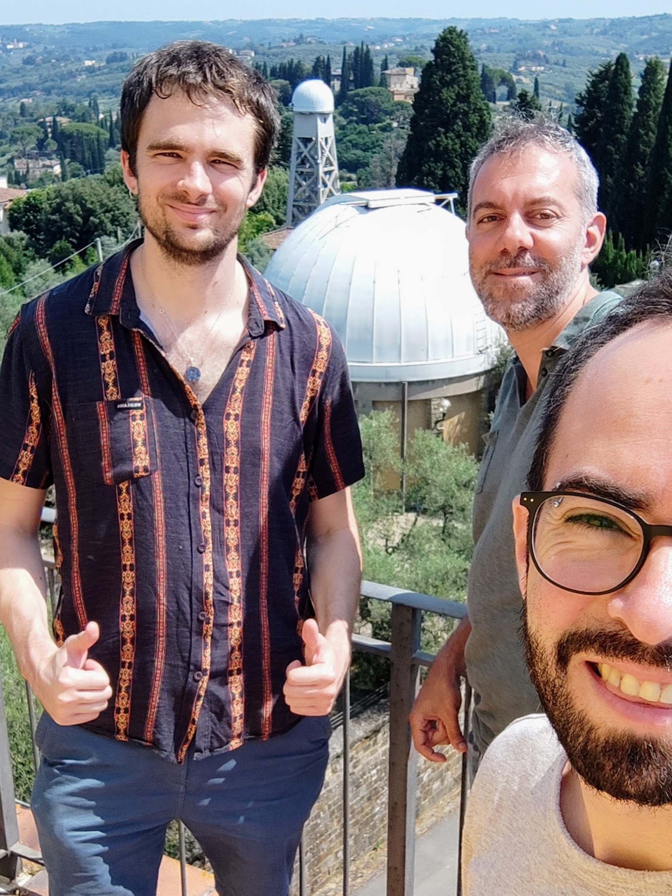

Have you ever wondered how planetary systems like our Solar System form? Thanks to the European Space Agency's (ESA) Gaia space telescope, we now have a new and extraordinary window to observe these processes in action, revealing the hidden dynamics in the dusty environments where stars and planets are born.
An impressive composite image presents 31 young stellar systems observed with the ALMA radio telescope at millimetre wavelengths. These observations show protoplanetary discs in orange and purple tones — structures of gas and dust surrounding newly formed stars. For comparison purposes, the image also includes a reconstruction of how our own Solar System is expected to have looked when it was just one million years old, with Jupiter's orbit indicated in cyan (lower right corner).
All the observed systems are centred on extremely young stars that recently formed following the gravitational collapse of large clouds of gas and dust. During this process, the material flattens out and gives rise to protoplanetary discs — the places where remaining dust and gas are expected to progressively clump together to form planets.

Collage of 31 young stellar systems observed with ALMA, with the positions predicted by Gaia for possible companions (in cyan). Credit: ESO, ESA/Gaia/DPAC, M. Vioque et al.
Detecting planets in these early environments has historically been very difficult due to the large amount of surrounding material. However, Gaia has changed this picture. In 31 out of a total of 98 young systems studied, the satellite detected small movements in the stars — a gravitational "wobble" — suggesting the presence of companions invisible to our telescopes. In seven of these cases, the signals are compatible with objects of planetary mass; in eight others, with brown dwarfs; while the remaining systems probably harbour binary stars.
The predicted positions for the orbits of these companions are marked in cyan in the images. In the case of the reference Solar System, Jupiter's orbit is also shown in that colour.

Researchers Miguel Vioque, Antonio Garufi and Sebastián Pérez meeting in Florence.
This result marks the first time that Gaia's astrometric technique has been successfully used to detect planets and companions around stars that are still forming. The study was led by Miguel Vioque (ESO, Germany) and included the participation of researchers from the Millennium Nucleus on Young Exoplanets and their Moons (YEMS), including its principal investigator Sebastián Pérez (Universidad de Santiago de Chile, CIRAS), as well as external collaborators such as Antonio Garufi (INAF, Italy).
Gaia's all-sky nature and large statistical reach allowed, for the first time, the analysis of broad samples of forming stars — something not possible with traditional ground-based searches, which are much more costly and limited to a few objects at a time.
These discoveries open the door to follow-up studies with next-generation telescopes such as the James Webb Space Telescope (JWST), which will allow the inner regions of these protoplanetary discs to be explored in greater detail. Furthermore, with Gaia's upcoming fourth data release, many more hidden planets are expected to come to light.
This work has been accepted for publication in Astronomy & Astrophysics under the title "Astrometric view of companions in the inner dust cavities of protoplanetary disks", by M. Vioque et al.
The research team includes scientists from Europe, Chile and other countries, and reinforces the role of YEMS as a key player in the study of the early formation of planetary systems, combining cutting-edge observations, astrometric analysis and international collaboration.
ESA Press Release:
"Gaia finds hints of planets in baby star systems"